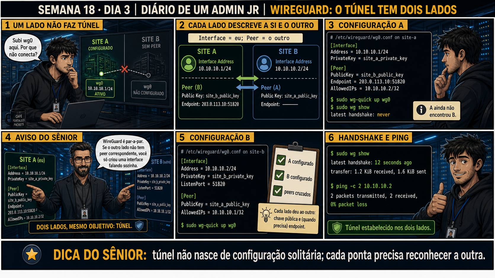

Semana 18 · Dia 3 | Nível Júnior — Redes
Primeiro Túnel WireGuard
quem tem endereço estável espera; quem está atrás de IP dinâmico é quem liga
ANTES DE ALTERAR, OBSERVE. DEPOIS DE ALTERAR, VALIDE.
1. O chamado
#1803
PRIORIDADE MÉDIA
11:00
aberto por: técnico de campo
host: Site A (datacenter, IP fixo 203.0.113.10) e Site B (filial, IP dinâmico) · serviço: túnel WireGuard entre dois sites
"Configurei o WireGuard nos dois sites, subi a interface nos dois, e não conecta."
O Endpoint do Site A foi configurado apontando pro último IP dinâmico observado do Site B. Isso é o erro raiz do dia — por quê?
💡 Passa o mouse nas palavras destacadas pra ver uma dica rápida — clica se quiser a explicação completa com analogia.
2. Antes de ver as opções — tenta responder
🧠 Recall ativo: quando um dos dois lados tem IP público fixo e o outro tem IP dinâmico (atrás de
NAT), qual dos dois deveria ter o campo Endpoint configurado apontando pro outro, e por quê?
Só o lado com IP dinâmico (Site B) deve ter Endpoint configurado, apontando pro IP fixo do Site A. O lado
fixo (Site A) não precisa de Endpoint pro peer dinâmico — ele simplesmente espera o handshake chegar,
porque tentar iniciar contra um endereço que muda é uma corrida perdida. Quem tem endereço estável espera;
quem está atrás de IP dinâmico é quem liga.
3. Questão comentada — clica numa alternativa
No wg0.conf do Site A, o técnico colocou Endpoint = ultimo_ip_dinamico_do_B:51820
no bloco [Peer] do Site B. O túnel falha de forma intermitente. Qual é a correção certa?
💡 Analogia do Sênior para Fixar: O princípio fundamental de 03 PRIMEIRO TUNEL WIREGUARD é como o alicerce de sustentação de um viaduto: garante que a estrutura de comunicação suporte alto tráfego sem colapsar.
4. Decodificador de conceitos
Clica em qualquer termo pra ver a definição completa e uma analogia do dia a dia:
5. Ferramentas e leitura da evidência
| Comando | O que faz |
|---|---|
wg-quick up wg0 | Sobe a interface, aplica endereço e rotas a partir do arquivo de configuração. |
wg-quick down wg0 | Derruba a interface e remove as rotas associadas. |
wg show | Mostra o estado do túnel: peers, latest handshake, bytes transferidos. |
--- /etc/wireguard/wg0.conf no Site A (IP fixo 203.0.113.10) ---
[Interface]
PrivateKey = site_a_private_key
Address = 10.99.0.1/32
ListenPort = 51820
[Peer]
PublicKey = site_b_public_key
AllowedIPs = 10.99.0.2/32
# sem Endpoint aqui: A não sabe (e não precisa saber) o IP dinâmico de B
--- /etc/wireguard/wg0.conf no Site B (IP dinâmico, atrás de NAT) ---
[Interface]
PrivateKey = site_b_private_key
Address = 10.99.0.2/32
ListenPort = 51820
[Peer]
PublicKey = site_a_public_key
AllowedIPs = 10.99.0.1/32
Endpoint = 203.0.113.10:51820
PersistentKeepalive = 25
$ wg-quick up wg0
$ wg show
interface: wg0
peer: site_b_public_key (truncado)
endpoint: 198.51.100.7:51820
latest handshake: 12 seconds ago
transfer: 1.2 KiB received, 1.4 KiB sent
$ ping -c 3 10.99.0.2
3 packets transmitted, 3 received, 0% packet loss
5.1 O painel 5 da prancha de hoje traz a analogia do sênior: o comando não deu erro nenhum, mas isso ainda não é prova de nada
Um colega roda wg-quick up wg0 nos dois lados, não vê nenhuma mensagem de erro no terminal, e já marca a tarefa como concluída.
Além de wg-quick up não ter retornado erro, o que precisa ser verificado antes de
considerar o túnel realmente funcional?
💡 Analogia do Sênior para Fixar: Diagnosticar anomalias em 03 PRIMEIRO TUNEL WIREGUARD é como o eletricista usando o multímetro no quadro de disjuntores: mede a passagem de sinal no ponto exato da falha.
5.2 "Posso salvar a configuração com qualquer nome de arquivo?"
Um colega salva o arquivo de configuração como config-site-b.conf e depois roda wg-quick up wg0, esperando que funcione.
Por que o arquivo precisa se chamar exatamente wg0.conf dentro de
/etc/wireguard/, e não qualquer outro nome?
💡 Analogia do Sênior para Fixar: Aplicar as boas práticas de 03 PRIMEIRO TUNEL WIREGUARD é como o protocolo de segurança da aviação: elimina pontos únicos de falha e garante previsibilidade operacional.
6. Procedimento profissional
- Escreva /etc/wireguard/wg0.conf em cada site, com [Interface] (PrivateKey, Address, ListenPort) e [Peer] (PublicKey, AllowedIPs).
- Configure Endpoint SÓ no lado sem endereço estável, apontando pro IP fixo do outro lado.
- Adicione PersistentKeepalive no lado atrás de NAT, pra manter a sessão de NAT ativa.
- Suba os dois lados com wg-quick up wg0.
- Confirme com wg show que existe latest handshake recente, e teste ping pelo IP do túnel.
7. Laboratório guiado — marca conforme for testando
Segurança: execute os testes apenas em VMs descartáveis e confirme nomes de discos, hosts e arquivos antes de cada comando.
- Crie /etc/wireguard/wg0.conf em cada uma das duas VMs de laboratório, usando as chaves geradas no Dia 2.Resultado esperado: arquivo presente e com permissão 600 nas duas VMs.
- Configure Endpoint apenas no lado que simula estar atrás de NAT (a VM sem IP fixo).Resultado esperado: a outra VM (a de IP fixo) sem nenhum Endpoint no bloco [Peer].🧑🏫 Aqui entra o Mentor (em breve): se você errar e colocar Endpoint nos dois lados, este é o ponto onde o chat com o Sênior-IA vai te mostrar por que isso não quebra na hora, mas fica frágil.
- Suba as duas interfaces com wg-quick up wg0.Resultado esperado: comando sem erro, interface wg0 visível em ip a nas duas VMs.
- Rode wg show nas duas VMs e confirme latest handshake recente.Resultado esperado: handshake de poucos segundos ou minutos atrás, nos dois lados.
- Teste ping de um lado pro Address do outro lado, pelo IP do túnel.Resultado esperado: 0% de perda de pacote entre os dois IPs do túnel.
8. Validação e encerramento
- Apenas o lado sem endereço estável tem Endpoint configurado no bloco [Peer].
- PersistentKeepalive está ativo no lado atrás de NAT.
- wg show confirma latest handshake recente nos dois lados.
- Ping pelo IP do túnel funciona nas duas direções, sem perda de pacote.
Rollback e limites
wg-quick down wg0 reverte a interface e as rotas de forma limpa e imediata — é uma
operação segura de refazer quantas vezes precisar. O ponto real de atenção é confundir qual lado deveria
iniciar a conexão: isso não trava o comando, só produz um túnel instável e intermitente, difícil de
diagnosticar sem olhar o wg show com atenção.
💡 Sobre repetição espaçada: "quem tem IP dinâmico é quem inicia a conexão"
conecta com qualquer cenário cliente-servidor atrás de NAT que você já viu — o lado sem endereço estável nunca
pode ser o destino de uma conexão de entrada confiável. O Anki vai reforçar esse padrão.
9. Resposta final
Alternativa correta: A. Nesta aula, a correção foi remover o Endpoint do
lado de IP fixo e configurá-lo apenas no lado dinâmico, apontando pro IP fixo do outro. O ponto central do caso
é este: quem tem endereço estável espera; quem está atrás de IP dinâmico é quem liga.
🔓 O que você desbloqueou hoje
Capacidade de montar e validar o primeiro túnel WireGuard real entre dois sites,
sabendo exatamente qual lado configura Endpoint e por quê. Amanhã você aprofunda o AllowedIPs — que não é só
uma regra de firewall, é também a rota que decide o que entra no túnel.